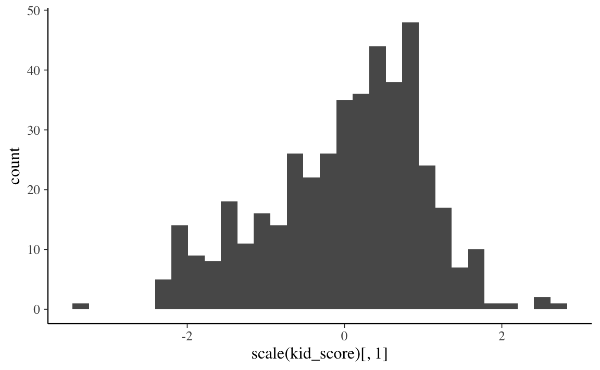
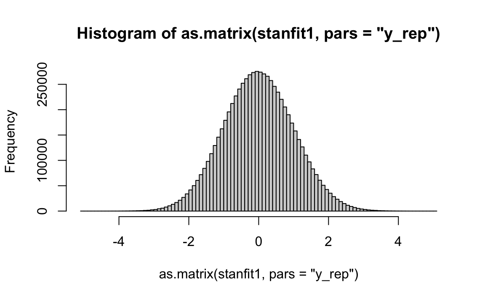
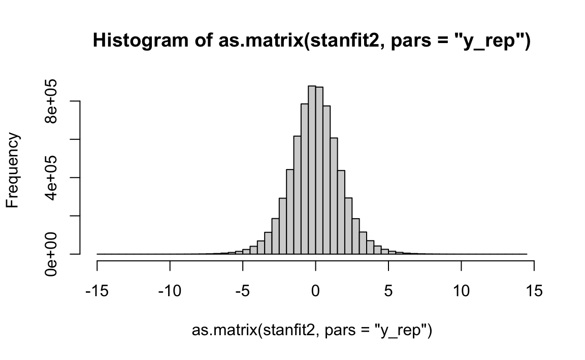

Capitolo 6 Predictive checks
Nel Capitolo ?? abbiamo visto come si genera la distribuzione predittiva a posteriori nel caso del modello più semplice: quello di un’unica variabile con una data distribuzione di probabilità. In questo capitolo estenderemo questa discussione al modello lineare. Esamineremo un esempio di posterior predictive check in cui simuleremo da \(p(y^{rep} \mid \theta, y)\), usando le stime a posteriori dei parametri \(\theta\) del modello, e un esempio di prior predictive check in cui simuleremo da \(p(y^{rep} \mid \mathcal{M})\), ovvero usando il meccanismo generatore dei dati del modello \(\mathcal{M}\) in esame, senza però includere i dati.
6.1 Campionamento dalla distribuzione predittiva a posteriori
La distribuzione predittiva a priori equivale alla distribuzione predittiva a posteriori, senza però i dati osservati. Quindi la distribuzione predittiva a priori non è altro che il caso limite della distribuzione predittiva a posteriori, calcolata però senza utilizzare i dati del campione. Il manuale Stan afferma che, se il codice per il il controllo predittivo a posteriori è già stato scritto, ed è possibile impostare il codice in modo che non sia necessario specificare i dati, allora non è necessario fare nient’altro.
Consideriamo qui un esempio nel quale vengono usati i dati kidiq (Gelman, Hill, and Vehtari 2020).
library("rio")
df <- rio::import(here("data", "kidiq.dta"))Iniziamo a generare un istogramma dei valori \(y\) stanardizzati:
df %>%
ggplot(aes(scale(kid_score)[, 1])) +
geom_histogram()
Per svolgere l’analisi bayesiana sistemiamo i dati (standardizzati) nel formato appropriato per Stan:
data_list <- list(
N = length(df$kid_score),
x = scale(df$mom_iq)[, 1],
y = scale(df$kid_score)[, 1]
)Il seguente listato specifica il codice Stan necessario per simulare dati dalla distribuzione predittiva a posteriori.
stancode <- '
data {
int<lower=0> N;
vector[N] x;
vector[N] y;
}
parameters {
real alpha;
real beta;
real<lower=0> sigma;
}
model {
alpha ~ normal(0, 1);
beta ~ normal(0, 1);
sigma ~ normal(0, 1);
y ~ normal(alpha + beta * x, sigma);
}
generated quantities {
vector[N] y_rep;
for(i in 1:N){
y_rep[i] = normal_rng(alpha + beta * x[i], sigma);
}
}
'
writeLines(stancode, con = "code/post_pred_check_1.stan")file <- file.path("code", "post_pred_check_1.stan")
mod <- cmdstan_model(file)fit <- mod$sample(
data = data_list,
iter_sampling = 4000L,
iter_warmup = 2000L,
seed = SEED,
chains = 4L,
parallel_chains = 2L,
refresh = 0,
thin = 1
)stanfit1 <- rstan::read_stan_csv(fit$output_files())Un istogramme dei valori \(y^{rep}\) può essere generato nel modo seguente:
hist(as.matrix(stanfit1, pars = "y_rep"), breaks = 100)
6.2 Campionamento dalla distribuzione predittiva a priori
Per comprendere le assunzioni che abbiamo introdotto nel modello, possiamo generare dati mediante il modello; tali dati, che sono generati interamente dalle distribuzioni a priori, sono chiamati distribuzione predittiva a priori. La generazione della distribuzione predittiva a priori ci aiuta a verificare se le distribuzioni a priori per i parametri del modello hanno senso. Quello che vogliamo sapere qui è: le distribuzioni a priori che abbiamo scelto generano dati che hanno caratteristiche realistiche?
Dal punto di vista della programmazione, l’unico cambiamento necessario rispetto al codice utilizzato per la distribuzione predittiva a posteriori è quello di eliminare la porzione di codice che fa riferimento ai dati \(y\) – nel caso di un modello lineare, i valori \(x\) devono invece essere mantenuti per potere generare \(y^{sim}\) (nel codice questa variabile è ancora chiamata y_rep).
data_list <- list(
N = length(df$kid_score),
x = scale(df$mom_iq)[, 1]
)stancode <- '
data {
int<lower=0> N;
vector[N] x;
}
parameters {
real alpha;
real beta;
real<lower=0> sigma;
}
model {
alpha ~ normal(0, 1);
beta ~ normal(0, 1);
sigma ~ normal(0, 1);
}
generated quantities {
vector[N] y_rep;
for(i in 1:N){
y_rep[i] = normal_rng(alpha + beta * x[i], sigma);
}
}
'
writeLines(stancode, con = "code/prior_pred_check_1.stan")file <- file.path("code", "prior_pred_check_1.stan")
mod <- cmdstan_model(file)fit <- mod$sample(
data = data_list,
iter_sampling = 4000L,
iter_warmup = 2000L,
seed = SEED,
chains = 4L,
parallel_chains = 2L,
refresh = 0,
thin = 1
)stanfit2 <- rstan::read_stan_csv(fit$output_files())Questo è un istogramma della distribuzione preditiva a priori. Tale distribuzione viene usata per valutare se le distribuzioni a priori dei parametri sono sensate. Concludiamo che sono sensate se la distribuzione preditiva a priori include tutti i valori possibili della distribuzione della \(y\), senza scostarsti troppo da essa.
hist(as.matrix(stanfit2, pars = "y_rep"), breaks = 100)
Commenti e considerazioni finali
I due predictive checks che abbiamo esaminato in questo capitolo servono due scopi diversi.
La distribuzione predittiva a priori viene utilizzata per comprendere le assunzioni introdotte nel modello. Per fare questo possiamo generare dei dati dal modello. Tali dati, che vengono prodotti interamente dalle distribuzioni a priori, sono chiamati distribuzione predittiva a priori. La distribuzione predittiva a priori ci aiuta a capire se le distribuzioni a priori per i parametri del modello hanno un senso. Quello che ci chiedimo è: le distribuzioni a priori generano dei dati che hanno caratteristiche realistiche? Una risposta affermativa a tale domanda corrisponde ad una distribuzione predittiva a priori che è più ampia della distribuzione dei dati osservati, in linea con il principio dei prior debolmente informativi. Tale distribuzione dovrebbe avere almeno una qualche massa nell’intorno ai valori estremi, ma plausibili dei dati; non dovrebbe, invece, esserci massa in corrispondenza di valori di dati completamente implausibili.
La distribuzione predittiva a posteriori viene invece utilizzata per esplorare le caratteristiche che potrebbero avere i possibili dati futuri. L’idea alla base del controllo predittivo a posteriori è semplice: se un modello è appropriato, dovremmo essere in grado di usarlo per generare dati che assomigliano ai dati che abbiamo osservato nel campione. La motivazione è simile a quella che ci ha condotto alla distribuzione predittiva a priori, tranne per il fatto che ora abbiamo un modello generativo dei dati basato sui dati osservati.